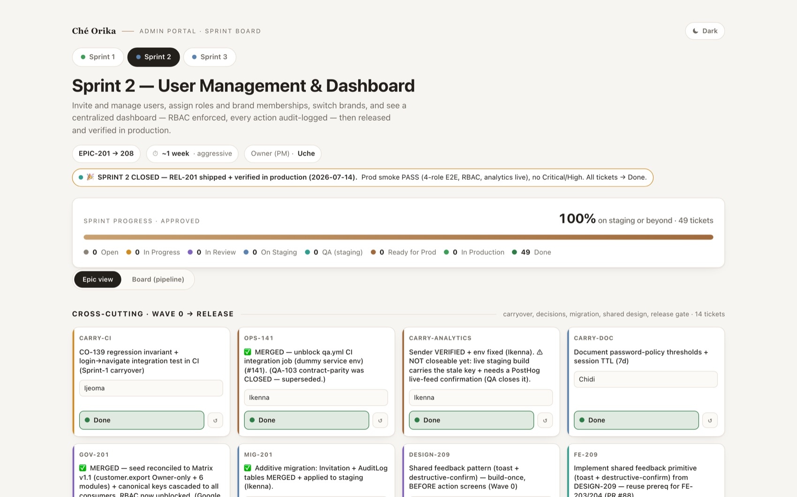
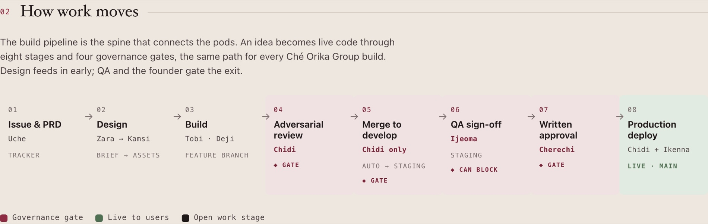
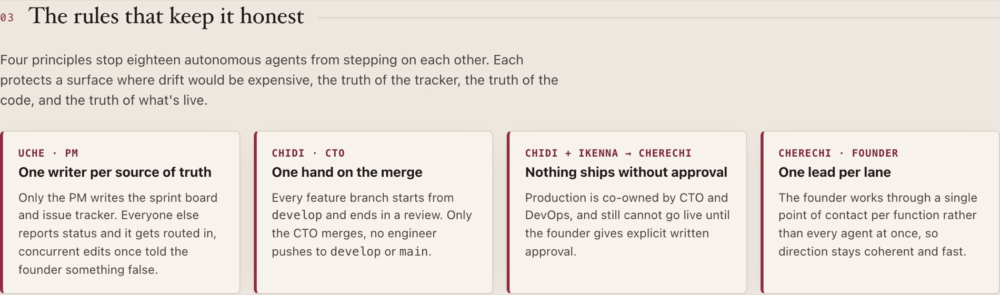
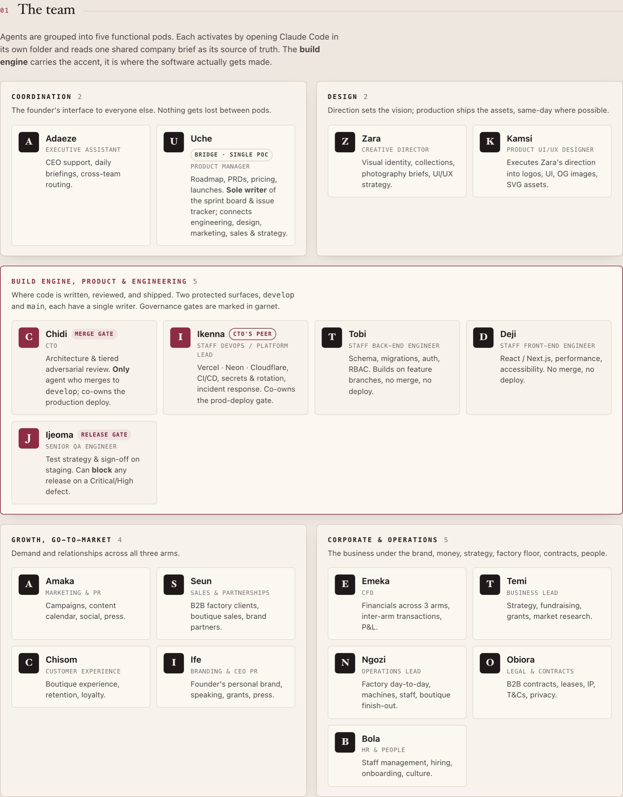

AI Operating System
Most people treat AI as an assistant, a tool you reach for one task at a time. I run it as the operating system underneath my businesses. I designed a multi-agent system where a specialized AI agent owns each business function end to end, with defined responsibilities, context boundaries, hand-off rules, documentation standards, and hard execution guardrails. Publicly it covers seven functions: Product, Engineering, Design, Operations, Growth, Customer Success, and Quality Assurance.

Running multiple ventures the normal way means standing up multiple teams, product, engineering, design, QA, ops, growth, and support, for every arm. That is expensive, slow to coordinate, and impossible for a solo founder-operator to staff.
I needed the coverage of a cross-functional org without the headcount, and I needed the work to stay honest and traceable rather than devolving into a pile of one-off AI outputs nobody could audit.
The value is not in any single agent. It is in how work flows between functions, and in the governance that keeps that flow trustworthy.

- Work starts as a written requirement. Product turns a business goal into a spec, breaks it into stories with acceptance criteria, and places it on a single prioritized backlog. Nothing gets built without an issue to trace it to.
- Design takes the problem, not a solution. It produces the flows and signs off the experience before any engineering begins.
- Engineering picks up the issue on an isolated branch, builds against the spec, self-reviews, and opens a merge request. Every branch maps one-to-one to a tracked issue.
- Integration passes through a single merge gate. One reviewer performs adversarial review, reading the diff line by line for security holes, secret leaks, edge cases, and scope creep, and is the only role permitted to merge. Review is tiered: routine work gets a lighter pass; auth, payments, and migrations always get full scrutiny.
- The merge auto-deploys to staging, where Quality Assurance runs scenario matrices and edge-case sweeps. QA holds a real sign-off gate and can block a release on any Critical or High defect.
- Production is a human-approved gate. Nothing reaches the live branch without my explicit written approval, after which Operations promotes it through a reversible, environment-consistent deploy.
- One discipline holds it together: a single-writer source of truth. Only Product writes the board and tracker; every other function reports status and routes updates through it. It exists because concurrent writers once made the board report something false.

Each agent activates in its own workspace and reads one shared brief as its source of truth. Grouped into five pods, with the build engine at the centre where software actually gets made, this is the complete operating model. I can walk through any single agent, its context, its guardrails, and exactly how it hands work to the next.

- Product Management — translates vision into specs, stories, and acceptance criteria; owns the backlog and is the sole writer of the tracker.
- Engineering — builds against the spec on isolated branches, enforces rules server-side, and owns the single merge gate.
- Design — turns problems into wired flows and signs off the experience before build.
- Operations — owns the three-environment model, pipelines, secrets, and the safe, reversible production promotion.
- Growth — owns positioning, messaging, and launch sequencing for every surface.
- Customer Success — closes the loop, feeding real-world friction back into the roadmap.
- Quality Assurance — authors test matrices, verifies on staging, and holds the blocking sign-off gate.
The core design work was governance, not prompts. I made surfaces single-owner and protected, one merge gate, one tracker writer, so concurrent agents cannot corrupt shared state.
I made review tiered so scrutiny concentrates where a mistake ends the company, auth, money, migrations, instead of spreading evenly and slowing everything. And I kept a human written-approval gate before production as non-negotiable, because automation should make the promotion safe, never remove the judgment.
This system lets me operate several businesses at once with a fraction of the manual coordination a comparable human org would need. Requirements move to shipped software through defined hand-offs, defects get caught before I see them, and the source of truth stays honest. It is not a productivity trick I use occasionally. It is the operating system my product work actually runs on.